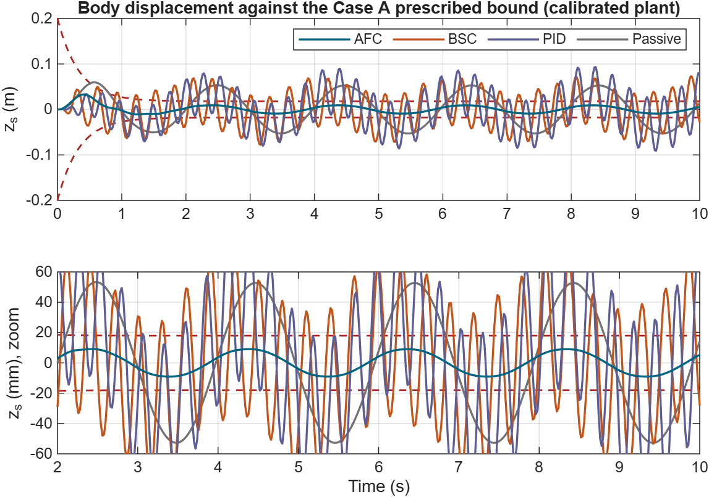
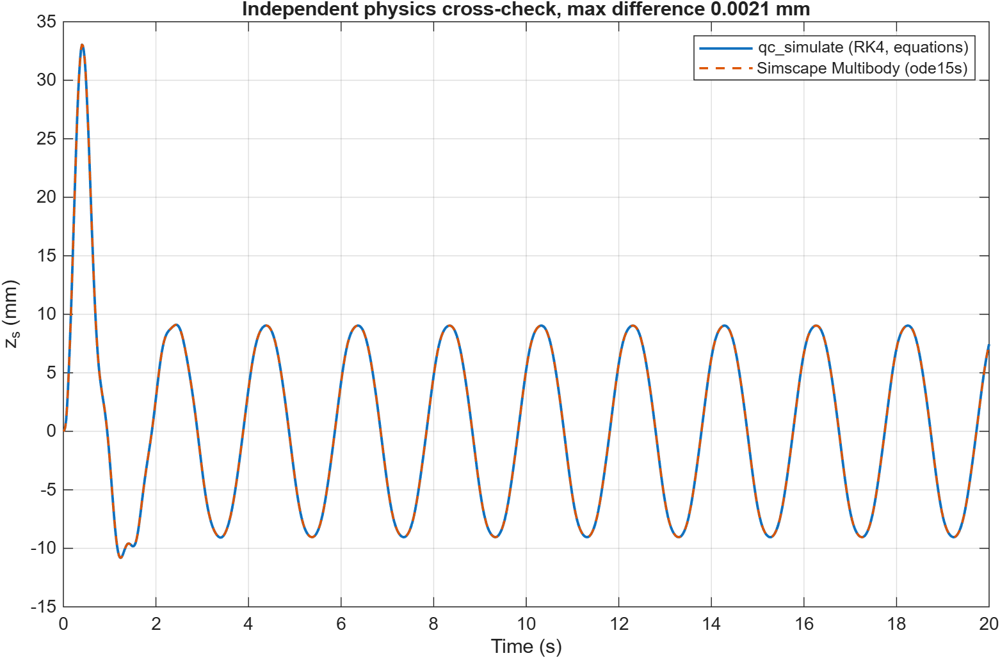
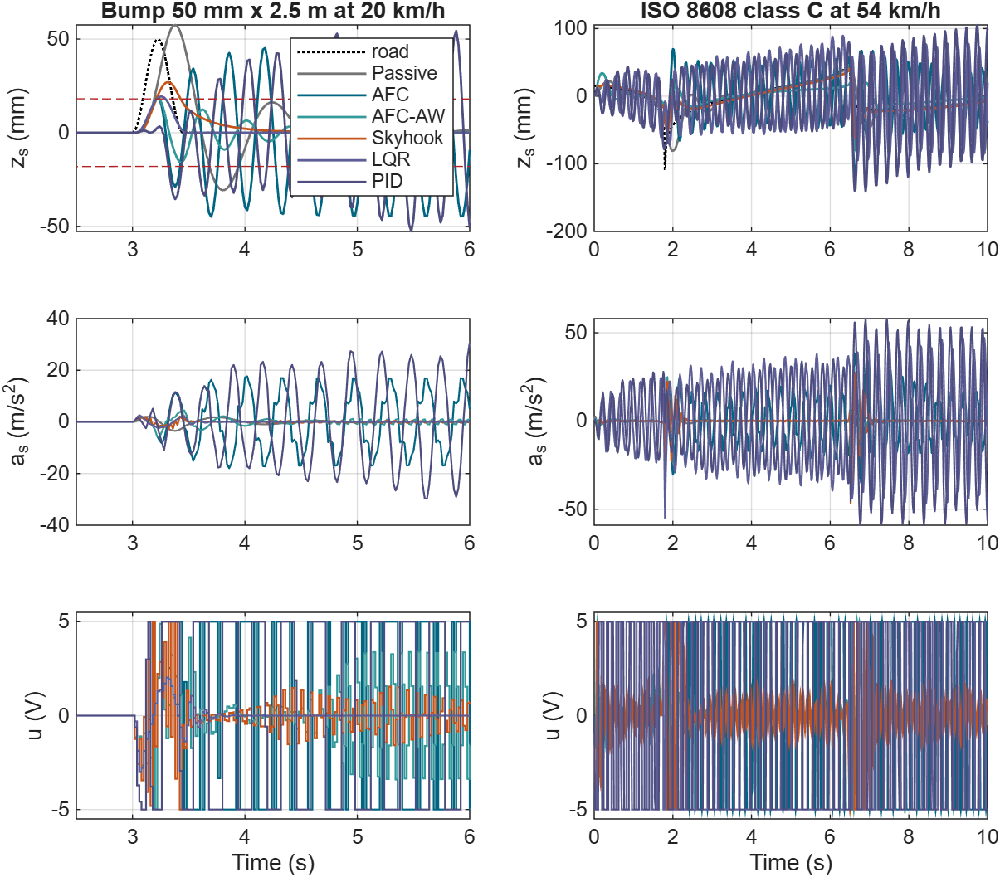
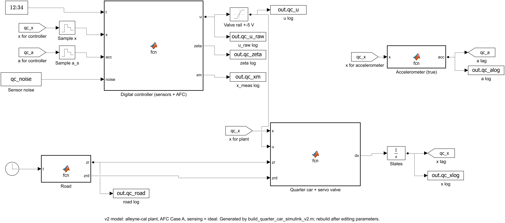

The paper keeps a car body inside a shrinking performance envelope with a three-step, model-free controller on an electro-hydraulic rig. We rebuilt it on a calibrated hydraulic quarter car, checked the code five independent ways, and stress-tested the claims with control theory, fair comparators and road transients. Everything here is simulation.
All motion is simulated: the calibrated hydraulic quarter car driven over the same 50 mm bump, with vertical motion exaggerated four times so centimetre-level movement is visible.
Each number in the report is tagged as printed in the paper, read off a paper plot, calibrated, assumed, or simulated by us.
Two fitted factors (valve gain 5×10⁻⁴ m/V, 33 ms lumped lag) on a standard hydraulic quarter car give IAE 0.129, ITAE 1.20, ITSE 0.0088 against the paper's 0.122, 1.14, 0.0093, with the gains unchanged. BSC and PID saturate, as reported.
The paper's slower-road gains fail a hold-out test: a joint fit across both gain sets has test error 0.63. Its pressure scaling, valve gain and lag are unpublished, and they decide the outcome.
On the v1 plant the 50 Hz loop is locally unstable (spectral radius 1.02). Removing the ±5 V rail makes it worse, so saturation was a symptom, not the cause.
Lemma 1's bound is tight while the valve is unsaturated and fails exactly where it saturates. The continuous loop is stable, yet every zero-order-hold implementation we tried (1–20 ms) is locally unstable through an 88 Hz hydraulic mode.
About 63 kN/m with little damping: strong at the road frequency, worse than passive in the 4–8 Hz comfort band. At equal effort, LQR and skyhook match or beat it.
Letting the envelope widen while the valve saturates removes rail-to-rail switching in the quarter car and the half car, and leaves Case 10 untouched.
From the MATLAB R2026a run; every figure is regenerated by run_phase1–run_phase3b.




Before trusting any number, the same equations were rebuilt independently and compared.
| Implementation | What it adds | Agreement with the MATLAB library |
|---|---|---|
| Simulink v2 | block diagram, 50 Hz digital controller, sensor noise path | 4×10⁻¹⁶ m |
| Simscape Multibody | mechanics from prismatic joints, not our equations | 2.1 µm |
| C on Cortex-M4 (QEMU) | instruction counts for the paper's timing claim | 10 digits |
| Browser lab (this site) | interactive teaching tool | IAE to 4 digits |
| GNU Octave 8.4 | runs without a MATLAB licence | same digits* |
* except a few runs riding the ±5 V rail, where the locally unstable loop amplifies rounding differences.